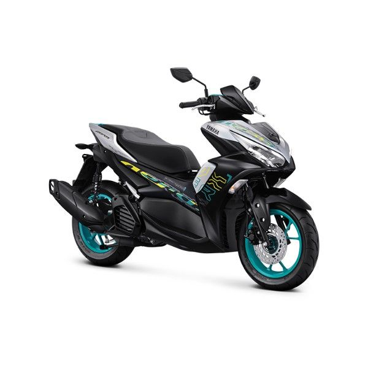

Daftar Isi
Tahun baru 2026 telah tiba! Semangat baru tentu harus diimbangi dengan mobilitas yang lebih prima. Memahami kebutuhan konsumen akan kendaraan yang tidak hanya handal tetapi juga bergaya, Dealer Resmi Yamaha kembali menghadirkan kejutan istimewa di awal tahun ini. Kami dengan bangga mengumumkan program "New Year, New Ride" yang didedikasikan khusus bagi pecinta motor sport matic.
Jika Anda sudah lama mengincar Yamaha Aerox 155 Connected, inilah saat yang paling tepat untuk meminangnya. Mengapa? Karena kami menawarkan promo potongan angsuran yang sangat signifikan, yang bisa membuat Anda hemat hingga jutaan rupiah. Tidak perlu menunggu bonus tahunan cair atau menabung lebih lama lagi, impian memiliki motor baru bisa terwujud sekarang juga dengan skema pembiayaan yang sangat ringan.
1. Detail Promo: Hemat Angsuran 3 Bulan
Program unggulan kami di bulan Januari 2026 ini adalah "Diskon Potongan Tenor". Mekanismenya sangat sederhana namun sangat menguntungkan bagi konsumen yang melakukan pembelian secara kredit. Biasanya, untuk tenor panjang (misalnya 35 bulan), Anda diwajibkan membayar penuh selama periode tersebut. Namun, dengan promo ini, Anda cukup membayar untuk 32 bulan saja!
Bayangkan jika angsuran bulanan Anda adalah Rp 1.500.000. Dengan potongan 3 bulan (3 x Rp 1.500.000), Anda sudah menghemat total Rp 4.500.000. Uang sebanyak itu bisa Anda gunakan untuk keperluan lain, seperti modifikasi tipis-tipis, membeli helm premium, atau bahkan untuk biaya touring perdana Anda. Promo ini berlaku khusus untuk unit Yamaha Aerox 155 Connected (All Variant) dengan tenor minimal 35 bulan melalui leasing partner kami seperti BAF, Adira Finance, dan WOM Finance.
2. Mengapa Harus Aerox 155 Connected?
Promo ini kami fokuskan pada Aerox 155 Connected bukan tanpa alasan. Motor ini adalah definisi sejati dari Personal Sports Scooter. Bagi generasi muda yang aktif dan ingin tampil beda, Aerox adalah pilihan yang tidak bisa ditawar. Berikut adalah alasan mengapa motor ini layak ada di garasi Anda:
- Power to Weight Ratio Terbaik: Dibekali mesin Blue Core 155cc berpendingin cairan (Liquid Cooled), Aerox memiliki performa tarikan paling responsif di kelasnya. Teknologi VVA (Variable Valve Actuation) menjaga tenaga tetap ngisi di setiap putaran mesin.
- Y-Connect: Fitur canggih yang menghubungkan motor dengan smartphone Anda. Cek kondisi oli, aki, lokasi parkir terakhir, hingga notifikasi pesan/telepon langsung di dashboard digital.
- Desain Aerodinamis: Tampilan bodi yang tajam dengan motif "X" di bagian samping memberikan kesan sporty yang kuat. Lampu LED depan dan belakang menambah kesan modern dan futuristik.
"Aerox 155 bukan sekadar alat transportasi, tapi identitas. Dengan promo ini, gaya hidup sporty kini lebih terjangkau."
3. Simulasi Kredit Ringan
Agar Anda memiliki gambaran lebih jelas, berikut adalah estimasi simulasi kredit untuk Aerox 155 Connected versi Standard (Harga OTR dapat berbeda tergantung wilayah):
| Uang Muka (DP) | Angsuran Normal (35x) | Promo (Bayar 32x) | Total Hemat |
|---|---|---|---|
| Rp 3.000.000 | Rp 1.450.000 | Rp 1.450.000 | Rp 4.350.000 |
| Rp 5.000.000 | Rp 1.320.000 | Rp 1.320.000 | Rp 3.960.000 |
4. Syarat dan Cara Pengajuan
Kami tidak ingin mempersulit Anda. Proses pengajuan kredit di Dealer Resmi Yamaha sangat cepat dan mudah. Cukup siapkan dokumen berikut:
- Fotokopi KTP Suami & Istri (jika sudah menikah) atau KTP Pemohon & Penjamin (jika belum).
- Fotokopi Kartu Keluarga (KK).
- Dokumen pendukung penghasilan (Slip Gaji / Rekening Koran / Bukti Usaha).
- Rekening Listrik atau PBB rumah (opsional untuk mempercepat proses).
Data Anda akan dijemput langsung ke rumah oleh tim surveyor kami. Proses persetujuan (approval) biasanya hanya memakan waktu 1x24 jam kerja. Setelah disetujui, unit motor akan langsung dikirim ke depan pintu rumah Anda tanpa biaya tambahan!
Pertanyaan Sering Diajukan (FAQ)
Sampai kapan promo ini berlaku?
Promo "New Year, New Ride" berlaku mulai tanggal 1 Januari hingga 31 Januari 2026. Segera ajukan sebelum kuota promo habis.
Apakah promo berlaku untuk pembelian cash?
Promo potongan tenor khusus untuk pembelian kredit. Namun, untuk pembelian cash, kami menyediakan hadiah langsung berupa Helm Eksklusif dan Jaket Yamaha.
Apakah KTP luar kota bisa mengajukan?
Bisa, asalkan Anda berdomisili dan bekerja di wilayah jangkauan dealer kami. Tim kami akan membantu proses verifikasi domisili.
Kesimpulan
Kesempatan tidak datang dua kali. Promo diskon angsuran hingga 3 bulan ini adalah solusi cerdas bagi Anda yang ingin upgrade kendaraan di tahun 2026 tanpa memberatkan arus kas bulanan. Dengan Aerox 155 Connected, mobilitas Anda akan semakin cepat, gaya semakin maksimal, dan dompet tetap aman. Segera hubungi sales executive kami melalui tombol WhatsApp di bawah ini!

Admin Sales
Marketing DivisionBagikan promo ini: